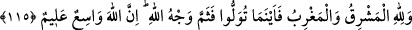

beldelerinde görülmüştür. Ey kardeşler, zikredilen bu şeylerden ibret alarak dînin elden
gitmemesi için gayret sarfedin.
Kuşeyrî âyeti şöyle yorumlamaktadır: Âbidlerin ibâdet yuvası demek olan nefislerini
şehvetlerle, âriflerin mârifet yurdu demek olan kalblerini dünyevî beklentilerle, vecd
ehlinin muhabbet yurdu demek olan ruhlarını hazz ve sükûna konmakla, tevhîd ehlinin
müşâhede yurdu olan gönüllerini kurb duygusuna takılıp aldanmakla tahrîb etmelerinden
daha büyük hangi zulüm olabilir?
Aynı zamanda âyet-i kerîmede Mescid-i Haram’ın ve Beyt-i Makdis’in şereflerine de
işâret vardır. Hadis-i şerîfde şöyle buyurulmuştur: “Kim sevâbı umarak Beyt-i
Makdis’i ziyâret ederse, Allah kendisine bin şehîdin sevâbını verir ve ona cehennem
ateşini haram kılar. Bir âlimi ziyâret eden, aynen Beyt-i Makdis’i ziyâret etmiş gibi
olur.” Mişkâtü’l-envâr’da da aynı şekilde geçmektedir. Gunye adlı eserde şöyle
denilmiştir: “Hürmet edilmeye en lâyık mescid, Mescid-i Haram’dır. Sonra sırasıyla
Medîne Mescidi, Beyt-i Makdis, câmiler, mahalle, sokak mescidleri ve evlerdeki
mescidlerdir. İmâm ve müezzinleri olmayan sokak mescidlerinde i’tikâfa girilmez.”
Evdeki mescidlerde i’tikâf ise ancak kadınlar için câizdir.
Şeyh Üftâde hazretleri şöyle demiştir: “Kâbe-i Mükerreme, Medîne-i Münevvere ve
Kudüs-i Şerîf’den sonra Bursa’daki Câmi-i Kebîr’den daha şerefli bir yer yoktur. Bu
cami, Nûh (a.s.)’a îmân etmiş yaşlı bir kadının evinin yeriydi. Kadın gemiye
erişememiş, Allah da onu bu evde tûfandan korumuştu. Bunun böyle olduğu keşf yoluyla
bâzı ehlullaha zâhir olmuştur. Bu câmide ilim ve ibâdetle iştigal edeni de Allah gaflet
tûfanından korur.”
Yine, edeblerine riâyet ederek Mekke’de bir gün ibâdetle iştigal etmek, diğer
beldelerde bir yıl meşgul olmaya bedeldir. Bizim ülkemizde de ibâdetle meşgul
olunacak iki önemli yer vardır: Biri Bursa’da Emir Buhârî Hazretleri’nin câmii, diğeri
de İstanbul’da Eyüp Sultan Hazretleri’nin makamıdır. Allah’ım bizi senin ibâdet ve
tâatınla meşgul olan kullarından eyle! Şâir der ki:
Âbidler namazda, ârifler niyâzda,
Âşıklar, vuslat âteşiyle yanıp tutuşmakta.
115. Doğu da Allah’ındır batı da. Nereye dönerseniz Allah’ın yüzü (zâtı) oradadır.
Şüphesiz Allah’(ın rahmeti ve nimeti) geniştir, O her şeyi bilendir.
“Doğu da, batı da Allah’ındır.” Bu ifâdeden maksad, yeryüzünün iki bölgesidir.
Yoksa sadece güneşin doğup battığı yer değildir. Bunun anlamı: Gerek mülk cihetinden,
gerek tasarruf cihetinden ve gerekse kendisine ibâdet mahalli cihetinden bir uçtan diğer
uca yeryüzünün tamâmı Allah’ındır. O halde sizler Mescid-i Haram’da veya Mescid-i